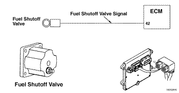

Cdigo de Falha 255
|
| CDIGO | RAZO | EFEITO |
| Cdigo de Falha:255 PID: SPN:632 FMI:3/3 LMPADA:mbar SRT: |
Circuito do Acionador da Vlvula de Corte de Combustvel do Motor - Voltagem Acima da Normal ou com Voltagem Alta. Detectado um circuito aberto ou um curto-circuito com uma voltagem no circuito da vlvula de corte de combustvel. |
A vlvula de corte de combustvel poder no abrir quando a chave de ignio for ligada (ON), ou poder no fechar quando a chave de ignio for desligada (OFF). |
|
 ISM11 CM876 SN - Circuito do Acionador da Vlvula de Corte de Combustvel do Motor
|
A vlvula de corte de combustvel um dispositivo utilizado pelo mdulo eletrnico de controle (ECM) para controlar a alimentao de combustvel do motor. Quando o ECM energiza o circuito do acionador da vlvula de corte de combustvel do motor, a vlvula aberta. Uma voltagem igual a zero para a vlvula de corte de combustvel do motor fecha a vlvula.
O circuito do acionador da vlvula de corte de combustvel do motor utiliza um sinal de modulao por largura de pulso (PWM). Um sinal de modulao por largura de pulso (PWM) um sinal de voltagem por pulso entre 0 VCC e a voltagem do sistema.
A vlvula de corte de combustvel est localizada prximo da bomba de combustvel.
Este diagnstico executado continuamente quando a chave de ignio encontra-se na posio ON.
O sinal de PWM do circuito da vlvula de corte de combustvel do motor detectado com um valor igual ao da voltagem do sistema quando o sinal de PWM desligado.
O ECM apagar imediatamente a luz mbar de verificao do motor (CHECK ENGINE) depois que o diagnstico for executado com xito.
Certifique-se de que a calibrao do ECM esteja correta. Verifique o histrico de revises de calibraes localizado no QuickServe Online para as correes aplicveis calibrao armazenada no ECM. Se necessrio, calibre o ECM.
Se o veculo estiver equipado com um sistema externo de parada, certifique-se de que o sistema esteja conectado corretamente e fornecendo voltagem para o circuito de alimentao de corte de combustvel.
As possveis causas desta falha so: